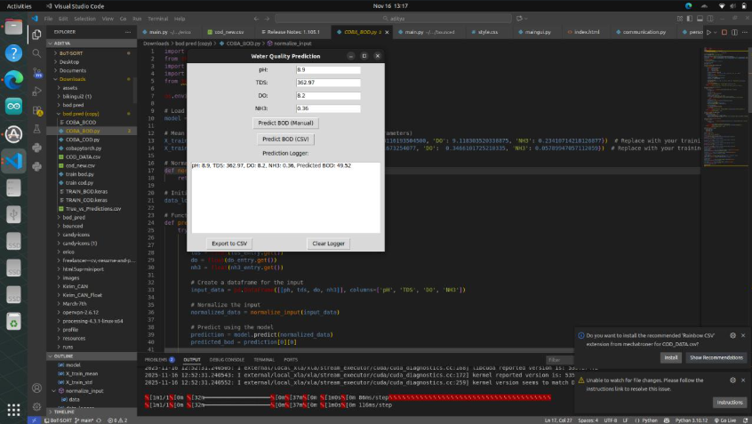

Predicting Water Quality with AI: BOD Estimation System
Turning Environmental Data into Instant Insight with Machine Learning 💧

Monitoring water quality is essential for environmental safety and decision-making. However, traditional laboratory testing—especially for Biochemical Oxygen Demand (BOD)—can take several days to produce results.
This project addresses that limitation by developing an AI-based prediction system that estimates BOD instantly using measurable parameters such as pH, TDS, and COD.
🧠 From Data to Real-Time Prediction
The system uses a neural network built with Keras to learn patterns from historical water quality data. Instead of waiting for lab analysis, users can input:
- pH → acidity/alkalinity level
- TDS → total dissolved solids
- COD → chemical oxygen demand
The system then predicts the BOD value in real time, transforming a slow laboratory process into a fast, data-driven estimation tool.
🖥️ User-Friendly Desktop Application
To ensure accessibility, a graphical interface was developed using Tkinter. The application allows users to:
- Input water quality parameters easily
- Run predictions with a single action
- View results instantly
This makes the system usable not only by engineers, but also by non-technical users in the field.
🛠️ My Role in the Project
I handled the complete pipeline—from data preparation to deployment—ensuring the system is both accurate and user-friendly.
📊 Dataset Preparation & Preprocessing
Organized and cleaned the dataset (pH, TDS, COD, BOD), performed normalization, and prepared it for training and validation.
🤖 Model Development (Keras)
Designed and trained a neural network for regression, optimizing parameters to achieve accurate BOD predictions.
📈 Model Evaluation & Optimization
Evaluated performance using error metrics and refined the model architecture to improve reliability across datasets.
💾 Model Deployment
Saved and prepared the trained model for integration into a real-time application.
🖥️ GUI Development
Built a clean Tkinter interface with input validation and clear result display for improved usability.
🔗 System Integration
Integrated the trained model with the GUI to enable real-time predictions from user input.
🧪 Testing & Validation
Verified prediction consistency, tested interface usability, and ensured system reliability.
🚀 Why This Project Matters
- ✅ Reduces dependency on time-consuming laboratory tests
- ✅ Enables faster decision-making in water quality management
- ✅ Demonstrates practical AI application in environmental engineering
- ✅ Bridges data science with real-world usability
🌟 Final Thoughts
This project shows how machine learning can transform complex environmental analysis into a fast and accessible tool. By combining predictive modeling with a simple interface, water quality assessment becomes more efficient and user-friendly.
Ultimately, it’s not just about predicting values—it’s about enabling faster, smarter decisions for environmental monitoring.